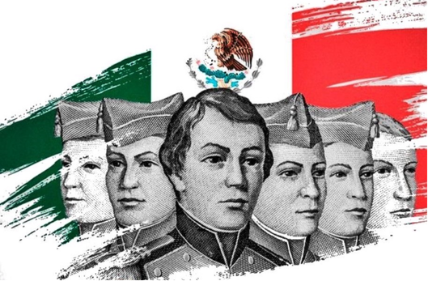

Aniversario de la gesta heroica de los niños héroes de chapultepec 13 de septiembre (1847).
Aniversario de la gesta heroica de los Niños Héroes de Chapultepec (1847).
Cada 13 de septiembre se conmemora el Aniversario de la Gesta Heroica de los Niños Héroes de Chapultepec, recordando la defense del Castillo de Chapultepec en 1847 frente a la invasión estadounidense.
¿Qué pasó el 13 de septiembre de 1847?
- El combate: Tropas del ejército de Estados Unidos atacaron el Castillo de Chapultepec, que entonces funcionaba como la sede del Colegio Militar.
- La resistencia: Menos de mil defensores mexicanos, entre soldados y cadetes, repelieron el asalto del ejército contrario que los superaba en número y armamento.
- Los cadetes caídos: Se recuerda con honor la muerte de seis jóvenes defensores que se convirtieron en símbolo de patriotismo.
Mitos y curiosidades
- El mito del salto de Juan Escutia: No existe evidencia histórica contemporánea de que Juan Escutia se haya envuelto en la bandera nacional para lanzarse al vacío. Los registros indican que fue abatido junto a otros cadetes mientras intentaban replegarse hacia el jardín botánico del cerro. La bandera mexicana sí fue capturada por el ejército estadounidense como trofeo de guerra.
- No todos eran "niños": Aunque el más joven (Francisco Márquez) tenía solo 12 o 14 años, varios de los cadetes recordados ya eran técnicamente adultos para la época: Juan Escutia tenía 20 años y Juan de la Barrera 19.
- Había muchos más defensores: Aunque los libros escolares destacan a seis jóvenes, en el Castillo de Chapultepec combatieron alrededor de 50 cadetes, más de 800 soldados del ejército regular y el heroico Batallón de San Blas, quienes fueron prácticamente exterminados al pie del cerro defendiendo la posición.
|

|